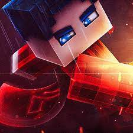
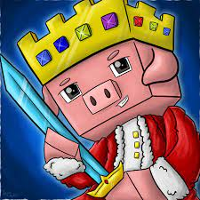
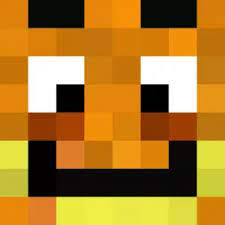

Basti GHG, mit bürgerlichem Namen Sebastian Freitag, ist ein deutscher Twitch-Streamer und Content-Ersteller. Er ist vor allem für seine Livestreams von verschiedenen Videospielen bekannt, insbesondere für seine Zeit im Spiel Minecraft. Basti GHG hat eine wachsende Fangemeinde und ist für seine unterhaltsame Persönlichkeit und sein spielerisches Können beliebt.
TechnoBlade

Technoblade, mit bürgerlichem Namen Dave, war ein bekannter amerikanischer Minecraft-YouTuber und Streamer. Er war besonders für seine PvP-Fähigkeiten und sein kompetitives Spiel in Minecraft bekannt. Technoblade gewann zahlreiche Wettkämpfe und Turniere und hatte eine große Fangemeinde. Seine Videos waren für ihren humorvollen und unterhaltsamen Stil beliebt. Technoblade verstarb am 12. September 2021.
GLP(GermanLetsPlay)
GLP (GermanLetsPlay), mit bürgerlichem Namen Erik Range, ist ein deutscher YouTuber und Streamer. Er ist bekannt für seine Let's Play-Videos, insbesondere zu Minecraft und anderen beliebten Spielen. Mit einer großen Fangemeinde und mehreren Millionen Abonnenten hat GLP sich einen Namen als einer der einflussreichsten deutschen Content-Ersteller im Gaming-Bereich gemacht.
Paluten

Paluten ist ein deutscher YouTuber und Streamer, dessen richtiger Name Patrick Mayer ist. Er ist bekannt für seine Minecraft-Videos und Livestreams, die ihn zu einem der beliebtesten deutschen Gaming-Content-Ersteller gemacht haben. Paluten hat Millionen von Abonnenten und ist für seinen unterhaltsamen und humorvollen Stil bekannt.